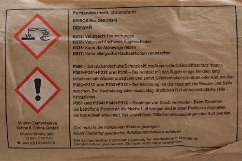
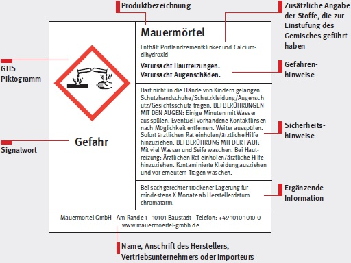
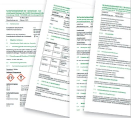
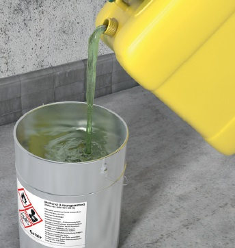
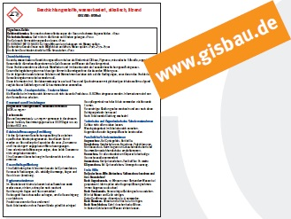

Gefahrstoffe sind Baustoffe, die die Gesundheit gefährden können. Viele dieser Gefahrstoffe sind gekennzeichnet:
Die Kennzeichnung informiert auf einen Blick,

Die gängigsten Kennzeichnungen für die Bauwirtschaft sowie die entsprechenden R- und S-Sätze finden Sie im Anhang 1.
Zusätzliche Informationen finden Sie in den Sicherheitsdatenblättern
|
Jedem als Gefahrstoff gekennzeichneten Baustoff, den Sie kaufen, liegt ein Sicherheitsdatenblatt bei. Diesem können Sie erste Hinweise entnehmen, welche Gefährdungen vom Produkt ausgehen und welche Schutzmaßnahmen Sie zu ergreifen haben. |

|
Liegt einem gekennzeichneten Produkt kein Sicherheitsdatenblatt bei, sollten Sie vom Hersteller das Sicherheitsdatenblatt anfordern. Dazu können Sie den auf S. 6 abgebildeten Musterbrief verwenden. |
Es gibt in der Bauwirtschaft aber auch nicht gekennzeichnete Produkte, die gefährliche Stoffe enthalten und die Gesundheit gefährden können. Solche nicht gekennzeichneten Produkte sind zum Beispiel:
|
Bei nicht gekennzeichneten Produkten können Sie Informationen über Gefährdungen und Schutzmaßnahmen ebenfalls den Sicherheitsdatenblättern entnehmen. Allerdings liegen diesen Produkten nicht immer Sicherheitsdatenblätter bei, da der Hersteller lediglich auf Anfrage des Unternehmers ein solches Sicherheitsdatenblatt liefern muss. In diesem Fall sollten Sie selbst aktiv werden und das Sicherheitsdatenblatt anfordern. Sie können auch hier den unten abgebildeten Musterbrief verwenden. |
|
Musterbrief zur Anforderung des Sicherheitsdatenblattes Sehr geehrte Damen und Herren, wir setzen folgende von Ihnen hergestellte beziehungsweise vertriebene Produkte ein: • .......... Für die ausführliche Ermittlung der von den Produkten ausgehenden Gefahren und der notwendigen Schutzmaßnahmen bitten wir nach § 5 Gefahrstoffverordnung bzw. § 31 REACH-Verordnung um die Übermittlung der Sicherheitsdatenblätter zu den oben genannten Produkten. Wir wären Ihnen dankbar, wenn Sie uns diese Sicherheitsdatenblätter entsprechend der REACH-Verordnung bzw. der Bekanntmachung 220 zur Verfügung stellen würden. Mit freundlichen Grüßen |
|
Wenn Sie Bau-Chemikalien in nicht gekennzeichnete Gebinde umfüllen, sind Sie selbst verpflichtet, die Gefahrstoff-Kennzeichnung auf diesen Gebinden anzubringen. Aufklebbare Vorlagen für solche Kennzeichnungen erhalten Sie im Fachhandel (z. B. Etikettenhersteller oder Gefahrstoffverlage). |

Ihre Berufsgenossenschaft berät Sie
Trotz Sicherheitsdatenblättern bleiben immer wieder Fragen offen. Teilweise sind die Informationen in den Datenblättern nur Spezialisten verständlich oder es fehlen Angaben zu speziellen Schutzmaßnahmen. Auch Informationen über ungefährlichere Alternativen (Ersatzstoffe) sind in Sicherheitsdatenblättern nicht zu finden. Bei all diesen Fragen hilft Ihnen Ihre Berufsgenossenschaft der Bauwirtschaft.
Die Fachleute der BG BAU können Sie betriebsbezogen beraten. Dabei greifen sie auf das Gefahrstoff-Informationssystem der Berufsgenossenschaft der Bauwirtschaft (GISBAU) zurück, in dem ausführliche Informationen zu den in der Bauwirtschaft eingesetzten Produkten enthalten sind. Sie als Unternehmer können Informationen über spezielle Produkte abrufen oder sich von dem Gefahrstoff-Experten Ihrer Berufsgenossenschaft persönlich beraten lassen (Telefon-Nr. siehe Anhang 6).
Die GISBAU-Informationen sind auch als CD-ROM bei der BG BAU erhältlich.
Ein Beispiel für eine GISBAU-Produktinformation finden Sie in Anhang 2.
